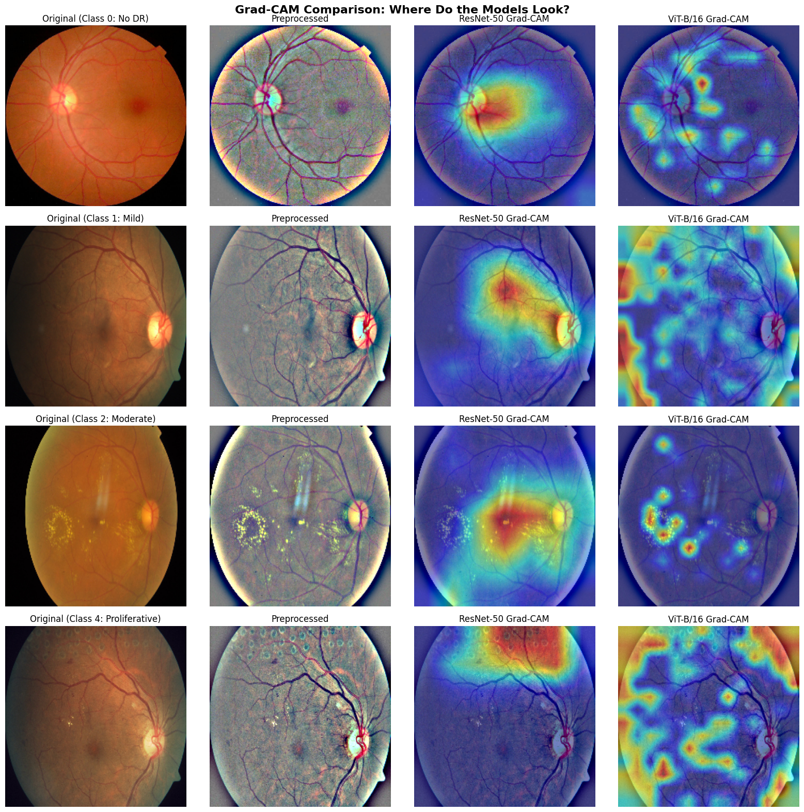
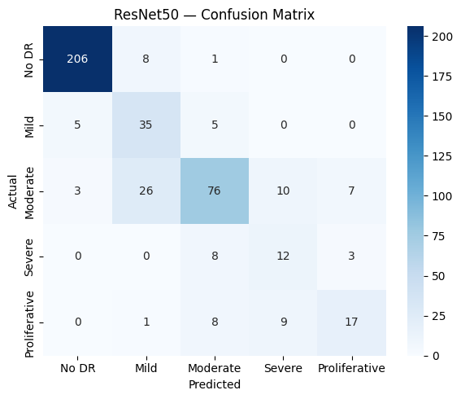
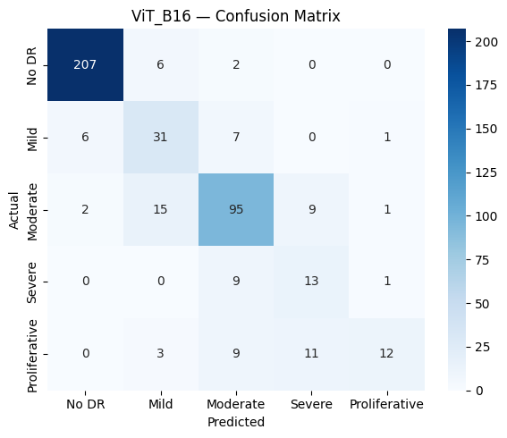
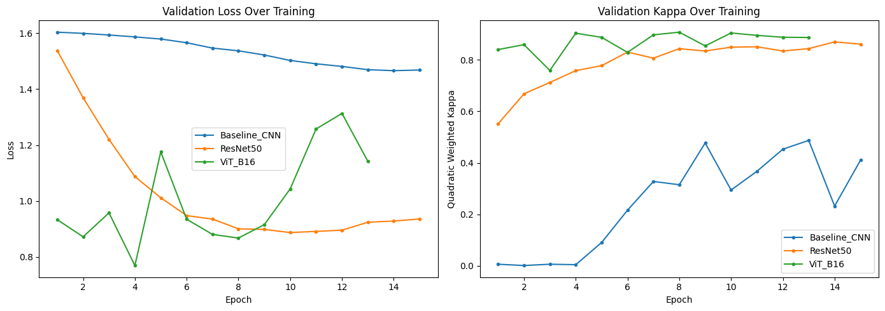

Transfer learning for grading diabetic retinopathy from retinal photographs. I compare a from-scratch CNN against a fine-tuned ResNet-50 and ViT-B/16, then use Grad-CAM to see where each model looks.
PyTorch · ResNet-50 · ViT-B/16 · Grad-CAM · APTOS 2019, 3,662 images

Diabetic retinopathy is graded from a retinal photograph on a five-point scale, from no disease through to proliferative disease. I used the APTOS 2019 dataset, 3,662 labelled fundus images across those five grades. The grading is hard at the top end: severe and proliferative cases are rare and look close to their neighbours, so a model has little data and little visual margin to learn them.
I trained three models: a three-layer CNN from scratch, and two ImageNet-pretrained models fine-tuned on the fundus images, ResNet-50 and ViT-B/16. Fine-tuning a pretrained model nearly doubled the kappa of the from-scratch baseline.
| Model | Approach | Kappa (QWK) | Accuracy |
|---|---|---|---|
| Baseline CNN | trained from scratch | 0.470 | 58.6% |
| ResNet-50 | pretrained, fine-tuned | 0.888 | 78.6% |
| ViT-B/16 | pretrained, fine-tuned | 0.884 | 81.4% |
ResNet-50 reached the highest kappa and ViT-B/16 the highest accuracy. Both pretrained models cleared the 0.85 quadratic-weighted-kappa mark used for strong agreement with expert grades.
Accuracy alone does not say whether a model is reading the retina or a shortcut. I used Grad-CAM to map where each model puts its attention. ResNet-50 tends to fire on a single concentrated region, while the Vision Transformer spreads attention across several anatomical landmarks. The difference in attention helps explain why the two models, despite similar scores, make different mistakes.
Figure 1. Grad-CAM heat maps across the three models. Warm regions mark where each model relies most. ResNet-50 concentrates on one area; ViT distributes attention across the retina.
The two transfer models make different errors. The confusion matrices show that most mistakes sit between adjacent grades, and that severe and proliferative disease stay the weak point, with F1 scores around 0.44 to 0.55. Those are the rare, high-stakes classes a clinical tool would most need to get right.


Figure 2. Confusion matrices for ResNet-50 (left) and ViT-B/16 (right). Errors cluster on the diagonal's neighbours, and the rare severe and proliferative grades are the hardest to call.
Training used Ben Graham preprocessing, mixed-precision on a T4 GPU, and an inverse-frequency weighted loss to handle the class imbalance. The Vision Transformer converged quickly, peaking near epoch 8 and early-stopping at epoch 13 as it began to overfit.

Figure 3. Validation kappa across epochs. The pretrained models climb fast and plateau well above the from-scratch baseline.
These results come from one competition dataset. Severe and proliferative disease remain the weak classes, and a deployable tool would need external validation across cameras, sites, and patient populations before it could grade in the clinic. The full pipeline, from preprocessing to Grad-CAM, is in the repository.